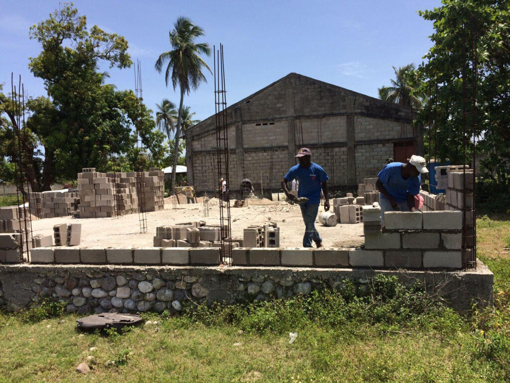

Bridging Gaps, Building Futures
Educational Outreach
Haiti's education system often leaves its children sidelined facing formidable challenges in the pursuit of a brighter future. Learn about their struggle and find out how you can help us make a difference.
A Nation of Children Left Behind
Haiti's youngest citizens are caught in a web where lack of education meets the harsh reality of poverty. In a world where education stands as a pivotal force for change and progress, it's heart-wrenching to realize that, for many Haitian children, this force remains just out of reach. This hardship looms large over the dreams of countless children as the promise of an education, often seen as the beacon of hope and the path out of poverty, remains elusive for many.
Barriers to Learning
The majority of schools in Haiti are privately run, leaving many families struggling to afford the tuition fees, uniforms, and other associated costs, which means countless bright young minds are left without the opportunity to access quality education and a chance at a better future. Statistics shed a grim light on the educational landscape in Haiti. A significant percentage of Haitian children don’t make it past primary school. Those who do often lack the most basic amenities, with schools in many areas missing essentials like desks, chalkboards, and even trained teachers. While Students around the world take their schooling for granted, a Haitian child's completion of primary school is a testament to resilience against significant odds.
Many Haitian children do not make it past primary school.
Education as Emancipation
Completing primary education in Haiti is a crucial step toward breaking the cycle of poverty. It paves the way for better job opportunities, informed decision-making, and self-advocacy. Without this foundational knowledge, many remain trapped in poverty, underscoring the urgent need to ensure every Haitian child has access to basic schooling. It's more than just education; it's the key to a self-sustaining life.
Education is the key to lifting children out of poverty
It's essential in enabling them to secure better jobs, advocate for their rights, and make informed decisions that positively impact their lives and communities. Without this foundational education, many Haitians remain shackled to the chains of poverty, unable to navigate the challenges of their daily lives or tap into the vast potential that lies dormant within them.
This makes the mission of ensuring every Haitian child finishes primary school all the more critical — it's not just about education; it's about equipping them for a self-sustaining and empowered life.
A Hunger for More than Learning
Hunger stands as a formidable barrier to learning in Haiti's classrooms. Many children grapple with empty stomachs, leading to decreased concentration, lower academic achievements, and more absences. Chronic hunger doesn't just impact immediate learning—it risks stunting their physical and mental growth.
Hunger in Haitian schools is not an isolated issue. Alarmingly, nearly half of Haiti's population is undernourished, as reported by the World Food Programme. For many students, the meal provided at school is their only source of nutrition. However, there's a glimmer of hope. With just a few cents—the equivalent of pocket change in the U.S.—a Haitian child can receive a vital school meal. This minimal investment can change a student's trajectory, underscoring the fact that in Haiti, ensuring a child's education is as much about feeding the body as it is the mind.
A $5 donation can feed a classroom of 25 students.
Foundations of Hope
In the heart of Pelerin, our dedicated team of mission trip volunteers came together with a purpose: to build a learning center. This center now stands as a testament to what collective determination and compassion can achieve. It offers children of Pelerin a sanctuary where they can pursue education, nurture their talents, and envision brighter futures, all thanks to the unwavering commitment of our volunteers.
Tools for Tomorrow
Amid building learning spaces, we emphasize equipping students with essential tools. We have undertaken initiatives to purchase and distribute school supplies to children in need. From notebooks to pencils, rulers to textbooks, our aim is to equip these young minds with everything they require to succeed academically.
Nurturing Haiti's Future
Our mission is clear and unwavering: to tackle the formidable challenges faced by Haiti's children head-on. In the face of adversity, we're committed to bringing hope, opportunity, and transformation to every child in Haiti, ensuring that they have the foundation needed to thrive and reshape their future.
Our mission stands firm: to confront the immense challenges confronting Haiti's children. We see the intricate connection between nourishment, education, and holistic development, and are unwavering in our resolve to feed minds and bodies alike. Amidst adversity, our aim remains steadfast: to gift each child in Haiti with hope, opportunities, and the tools for transformative growth.
Our Mission is to bring Hope, Opportunity, and Well-being to Haiti

Your Pledge, Their Progress
Your donation is a beacon of hope for Haiti's children. Every contribution ensures they receive nourishing meals, a safe environment to learn, and the essential supplies to foster their education. Every bit of support, no matter how small, can make a difference in the lives of Haitian children. They deserve not just our empathy but our commitment to effecting tangible change.
The future of the nation depends on their success.